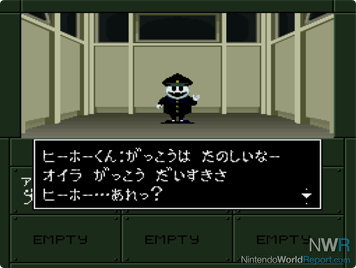
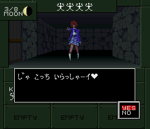
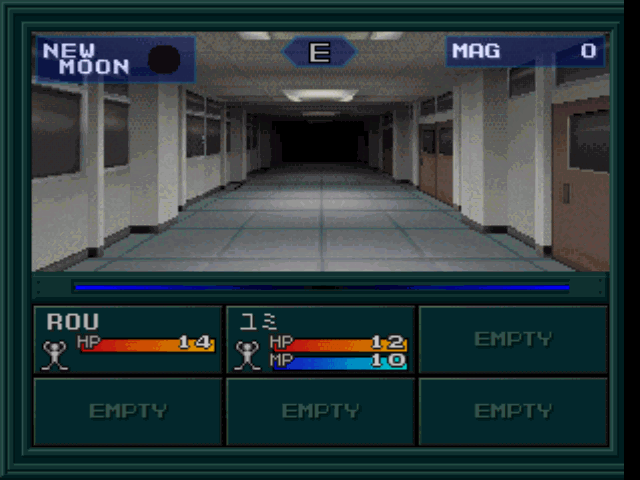
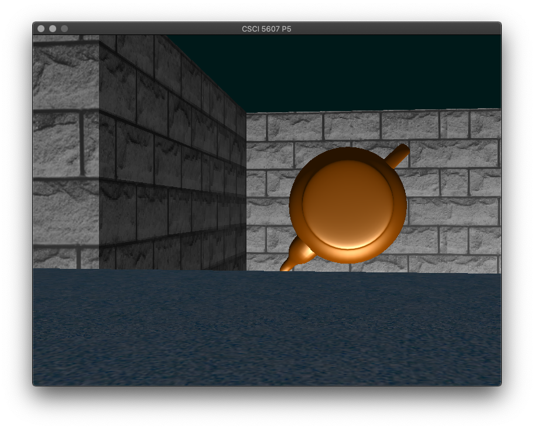
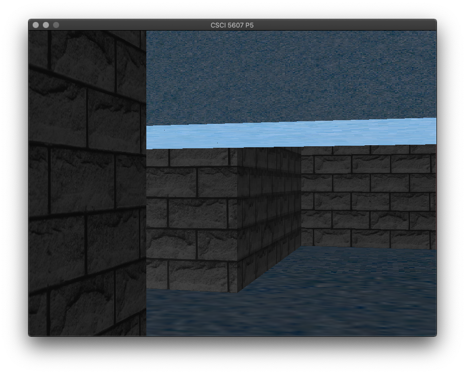
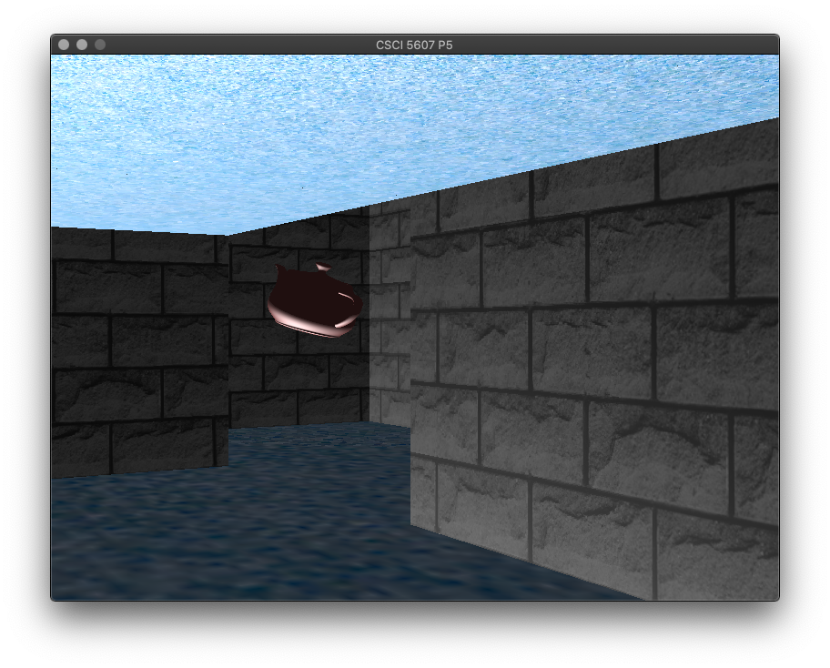
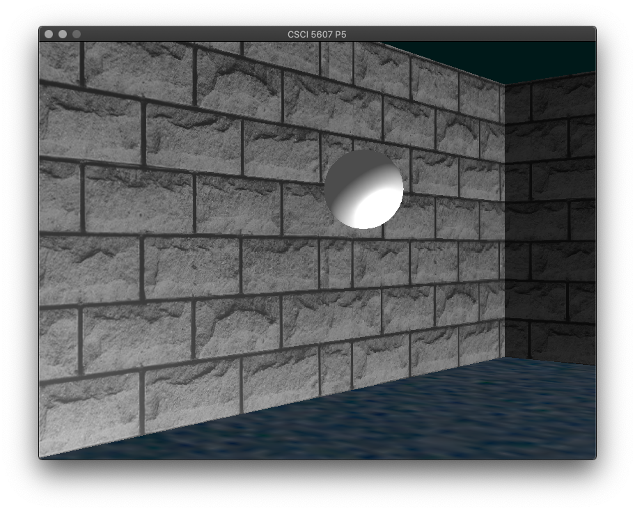
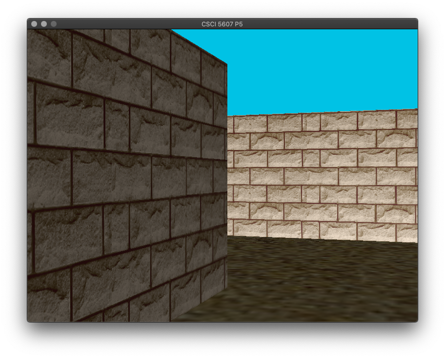

CSCI 5607 Final Project:
Real Time Game Programming
In this project, I plan to extend my maze game engine into something that resembles the Megami Tensei games from the late 80s. It will remain a first-person game, and I will extend it by adding battles and other encounters to the game. There will be bosses that the user will have to defeat to beat the game. I am working alone on this project. I have not started yet, although I do have a good idea of what it will look like when I'm done. I think the largest obstacle in implementing this idea will be parsing and loading arbitrary models into the game. If I'm able to successfully implement that, programming the logic and producing textures should not be too hard.
Below are some screenshots from "Shin Megami Tensei if..." (1994) to give you an idea of what I'm going for.
Note: this game uses 2d sprites, but I will be reusing my game engine from P4 so my final project will have 3d artifacts.



The above paragraphs were the goals I had set before starting to work on this project. I still maintain that most of the simple mechanics of an early Megami Tensei game would have been simple enough to implement on top of Project 4 with the exception of obj loading, but due to some unfortunatate circumstances such as my second dose being right in the middle of finals week and my 5 other classes, I had to go for a more reasonable extension in my actual project. The only real mechanics that I can say I was able to implement from my initial plan is ducking jumping and ducking over obstacles.
One of the things I was planning on devoting some time to was locking the motion of my character into tiles. For instance, when the player presses the "W" key, the character moves into the tile that intersects sin(cameraAngle). This style of motion, combined with the "slow in, slow out" principle of animation, is one of the telltale characteristics of early 80s Japanese dungeon crawler games. I was able to implement "slow in, slow out" to some extent in my jumping animation (see video), however I eventually abandoned the idea of tying my movement mechanics to tiles as that would have required a larger overhaul to how I handled keypresses and camera/character positioning than I had time to do. Another thing that was on the books was parsing obj files into my program. I was able to find some out of the box solutions to this online, however the challenge then was integrating those libraries to my existing mess of spaghetti code, which again represented an obstacle in the form of time. In addition, I realized that I probably wouldn't have been able to source demon models and would have had to sub them with some pretty generic looking ones, which sort of defeated the point of being a MegaTen-inspired game. I was happy with the existing (very crude) lighting in Project 4, but one rendering-pipeline related improvement I wanted to make was adding different surfaces with unique bump mappings. I planned on having some "ice" tiles where the player wouldn't be able to stop their movement after stepping on one with no (the default) bump mapping, and various other floor textures, (brick, gravel for normal dungeon floors, "poison" for gradually decreasing the player's HP when they step on them with goo-looking bump map, etc). Finally, (and this is something that others' projects have inspired me to do) infinite level generation would be really awesome, though I imagine this would also require a large overhaul to the extremely simple map-parsing system.
Source code
Demo Video:
Key Features and Images: Different levels of the dungeon are now associated with different textures. There are now obstacles in the way of the player getting to the keys. These may be ducked under or jumped over. Most levels contain a portal that take the player to the next level (or the previous level if they are not careful!) and the dungeon is only completed when the player reaches the goal in the final level.
Here is an obstacle that must be jumped over:

...and one that must be ducked under:
 
Here's a "portal" the player can enter to go to the next level:
 
Future Work: I would really like to have this evolve into the MegaTen clone that is deserves to be, so I am planning on implementing the features I mentioned in the challenges above in my free time. Additionally, there are some non-5607-related mechanics that may be nice to implement, such as displaying text boxes when conversing with NPCs in dungeons and implementing some turn-based battle logic.